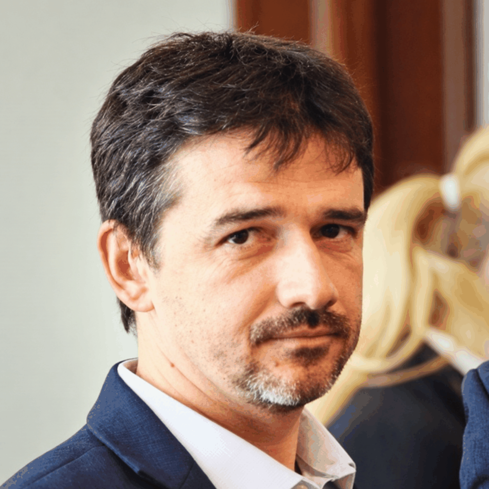

01
Captăm
Alegem senzori, condiționăm semnale și construim lanțuri de achiziție potrivite fenomenului urmărit.
Sunt Florin Ciprian Argatu. Lucrez la intersecția dintre măsurări, senzori, sisteme embedded și monitorizarea inteligentă a energiei. Construiesc sisteme care transformă datele fizice în informații utile.
Un fir comun leagă cercetarea, prototiparea și predarea: măsurarea corectă a lumii reale.
Alegem senzori, condiționăm semnale și construim lanțuri de achiziție potrivite fenomenului urmărit.
Integrăm echipamente, microcontrolere și protocoale industriale în sisteme coerente de monitorizare.
Transformăm datele în indicatori și vizualizări utile pentru diagnoză și decizie.
De la achiziția semnalului la arhitecturi conectate, cu accent pe validare și utilizare practică.
Noduri IIoT, comunicații interoperabile, stocare și analiză pentru monitorizarea distribuită a energiei și a altor resurse.
Monitorizare cu analizor de rețea, senzori de mediu, Modbus RTU/RS-485, ESP32-S3 și MQTT.
Monitorizarea consumului și calității energiei; integrarea datelor de măsurare în tablouri de bord pentru diagnoză.
Predau ingineria măsurării prin principii, exemple aplicate și contact direct cu echipamentele — completate acum de simulări interactive.
Alege disciplina pentru a deschide laboratorul virtual într-o filă nouă.

Sunt conferențiar doctor inginer în cadrul Facultății de Inginerie Electrică, POLITEHNICA București. Interesele mele de cercetare includ măsurările electrice, sistemele cu senzori, electronica embedded, monitorizarea energiei, aplicațiile IIoT și sistemele de măsurare și monitorizare e-Health (IoMT). Îmi place să duc ideile până la prototip și să aduc problemele reale în sala de curs.
Pentru colaborări de cercetare, proiecte aplicate sau întrebări legate de cursuri, scrie-mi pe adresa instituțională.
florin.argatu@upb.ro ↗Adresa: Splaiul Independentei nr. 313
Birou: EB127
060042, Bucuresti, ROMANIA
Tel.: +40 766799676